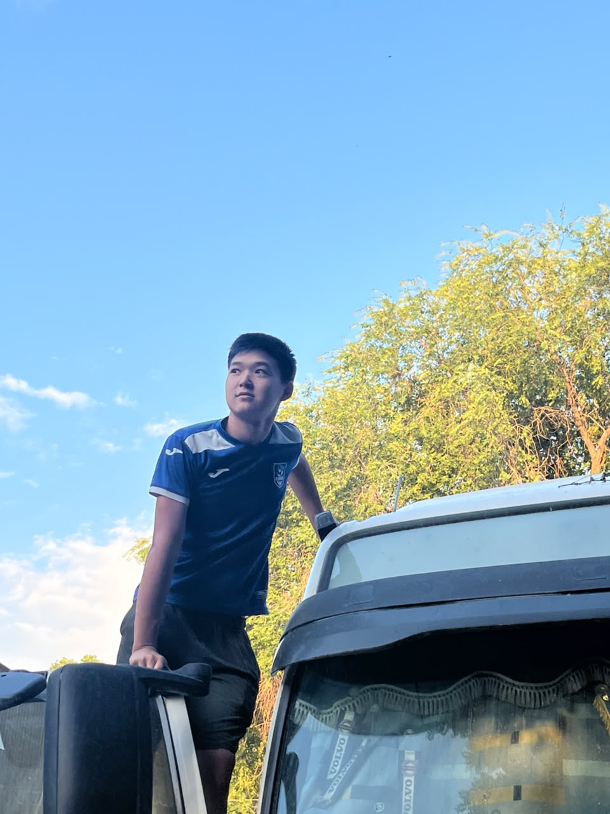

Портфолио
- 🏆 Winner IMO (International Mathematical Olympiad)
- 🎓 Finalist Flex international program
Обо мне

Байбол, 16 лет
Студент колледжа. Мечтаю стать дальнобойщиком.
🚛 Дорога — моя страстьЧто я умею
Мои навыки и компетенции
| Навык | Уровень | Описание / опыт |
|---|---|---|
| 🚚 Вождение и логистика | Средний | Регулярно езжу с папой в рейсы, изучаю устройство фуры, правила перевозок, основы маршрутизации. |
| ⚽ Футбол | Уверенный | Играю в свободное время, развиваю командный дух, выносливость и быстроту реакции. |
| 📖 Чтение и самообразование | Базовый | Читаю книги, смотрю видео про грузовики и дальние поездки, интересуюсь новыми технологиями в транспорте. |
| 🧮 Математика и логика | Продвинутый | Победитель IMO, финалист Flex — умею быстро считать, анализировать и принимать решения. |
| 🛠️ Базовое обслуживание авто | Начальный | Помогаю папе с мелким ремонтом, изучаю устройство двигателя и ходовой части. |
Меня зовут Байбол, мне 16 лет. Я учусь в колледже. С детства я мечтаю стать дальнобойщиком. Сейчас я иногда езжу с папой в рейсы и наблюдаю за его работой. Мне очень нравится дорога, большие фуры и сама атмосфера дальних поездок.
В свободное время я люблю играть в футбол, иногда читаю книги и смотрю видео про грузовики. Я хочу получить больше опыта и в будущем стать хорошим и профессиональным дальнобойщиком.
Я стараюсь развиваться, узнавать новое и идти к своей мечте.